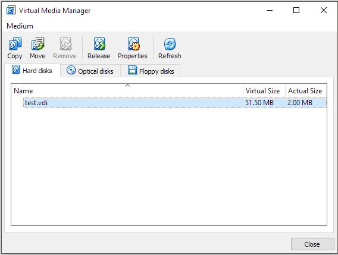
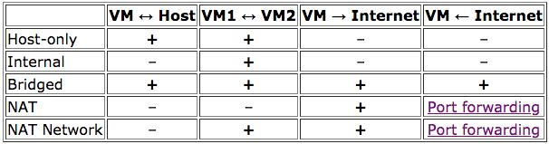

Overview: As a virtual machine can be thought of as virtual, the hardware being used to run
it is not. Therefore, the system needs to have a hard drive to run off of. Here we have the
general information about how VirtualBox handles storage.
Disk Image File: The entire system is handled in a folder on the host machine. This
makes the file structure unique because unlike a physical hard disk the memory cannot be
expanded as needed. However, with a virtual machine if the user selects Dynamically allocated
memory on set up, then the size of the virtual hard disk can change as needed from the
visiting system.
The virtual hard disk is comprised of four different file formats, all of which can be specified
by user on creation of the visiting system on the host system. The four file types are: VDI, VMDK,
VHD, and HDD.
VDI (Virtual Disk Image) is the native file format to VirtualBox, and is the default file type when
setting up a new virtual machine. VMDK (Virtual Machine Disk) is the native file format for VMware,
and in order to create convenience to the community Virtualbox can boot machines encoded in this
file type. VHD (Virtual Hard Disk) is the file type from Microsoft. Finally, an HDD file type
from Parallels, however, Virtualbox can only support up to version 2 of this file type.
When selecting a file type for a virtual machine it is recommended to select Dynamically
allocated, this way if the system needs more space it will be available for it. However,
if fixed-size image is selected the system can only have as much as the upper limit is,
and the file will automatically request and consume the selected size on the host’s physical
drive.
Virtual Media Manager
The Virtual Media Manager (VMM) is where the user can look at and manage the different virtual machines
hosted by Virtualbox. In the manager the user can view the size and all media attached to a virtual machine.
The VMM can be found under the file dropdown when Virtualbox is running. An example is shown below.

From this window the user can change all of the following:
User can remove an image, this will remove it from the main list however the machine is
still there. In the process of removing the user can select to delete the files as will.
User can release an image, this will release an attached virtual hard disk if it is
attached to a VM.
User can copy an image, this also allows the user to change the file type from
current file type to a new file type.
User can modify an image, this allows the user to change the size of space allocated
to the selected virtual machine.
User can refresh, this will redetermine the displayed data sizes allocated
and consumed by the selected machine.
These five user options are only usable when the user selects a particular image, this will
ensure the user understands which image they are working with.
Virtual Networking
Networking modes:
Not attached - VirtualBox reports that a network card is present but there
is no connection.
Network Address Translation (NAT) - Default mode.
NAT Network - new NAT
Bridged Networking - VirtualBox connects to one of your installed network card
and exchanges packages directly.
Internal networking - visible to selected virtual machines, but not to
applications runnion on the host machine.
Host-only Networking - creates networking containing the host and a set of
virtual machines, without the host’s physical network.
Generic Networking - allows user to select driver
UDP Tunnel
VDE (Virtual Distributed Ethernet) Networking
A table of the networking details is shown below.

VirtualBox Programming Interfaces
VirtualBox comes with comprehensive support for third-party developers. this
allows for an infinite amount of possibilities and customizability.
The Main API exposes the feature set of the virtual machine.
The "Software Development Kit (SDK)" somes with a programming guide and
reference in PDF format.